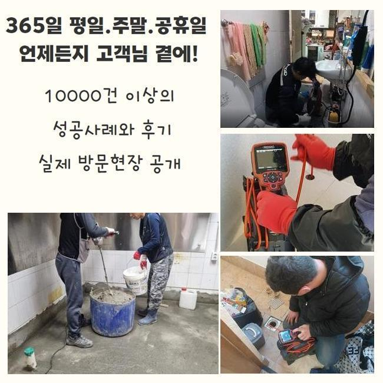
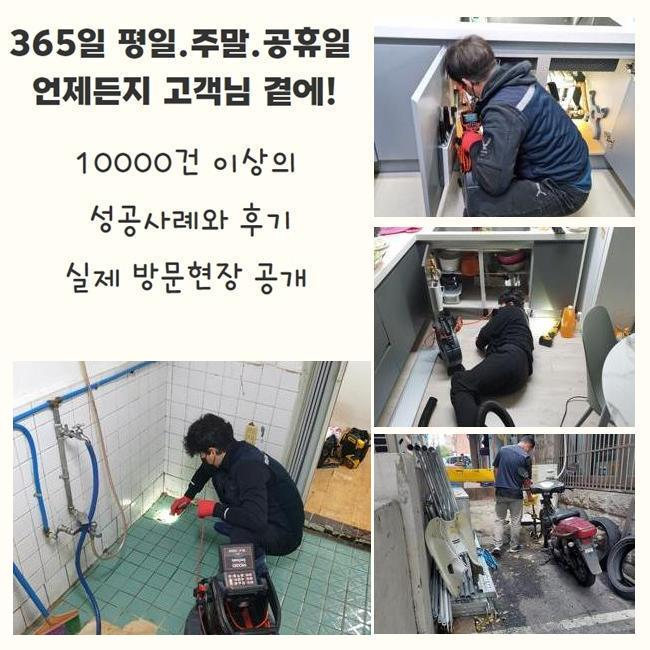
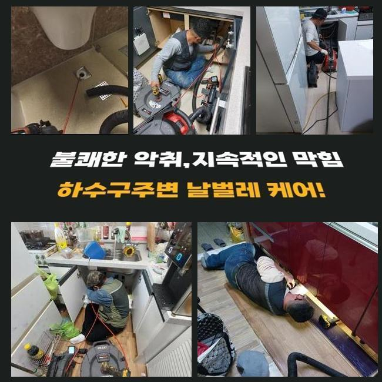
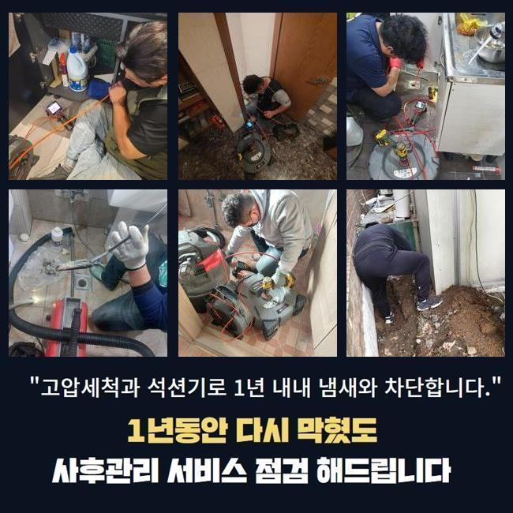
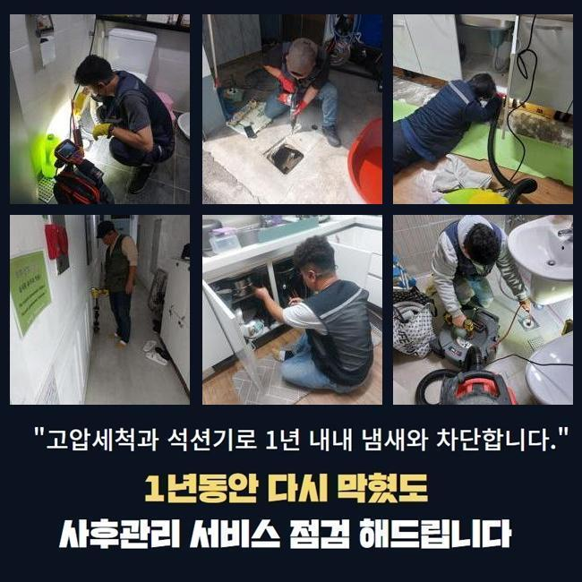
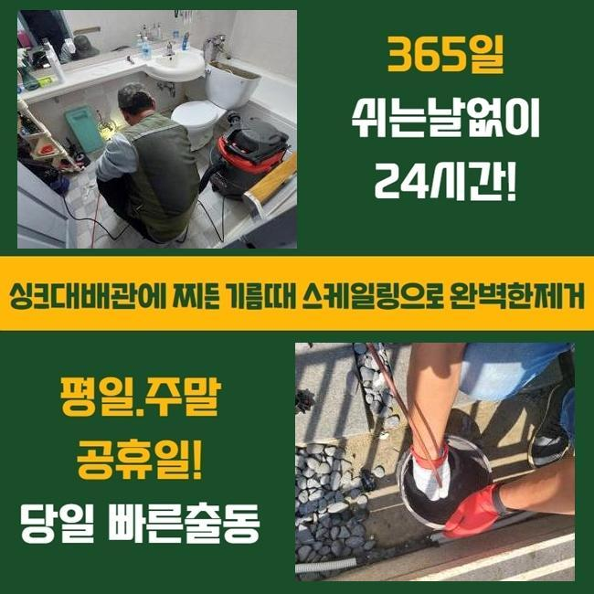
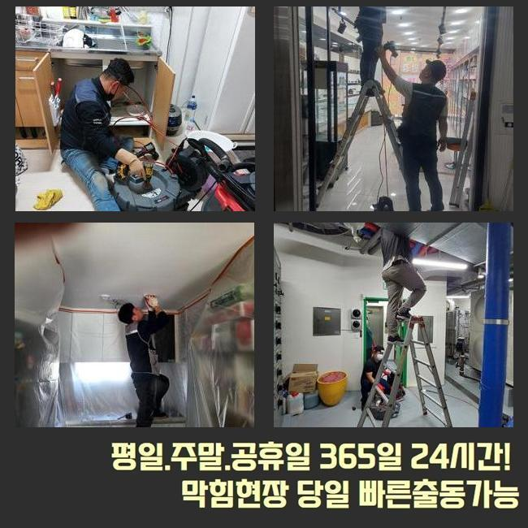

🏠 일산 장항동욕실바닥막힘 고봉동 맨홀역류 누수
용인 하수구막힘 전문 시공 후기

📋 작업 개요
- 위치: 용인
- 서비스 유형: 하수구막힘, 배관막힘, 맨홀막힘, 누수수리, 역류해결, 배관청소, 악취차단
- 작업 일시: 2024. 12. 1. 2:57
- 업체명: 하수구수사대 (010-5615-2118)
🔍 문제 상황
일산 장항동욕실바닥막힘 고봉동 맨홀역류 누수
잘 쓰던 화장실 안의 배수구가 폐쇄돼서 하수가 흘러나가지 못하는 문제를 안고있던 곳에 갔습니다
가장 적절한 대응을 시행하기 위해서 작업할 현장으로 가장 빠른 타임에 방문드렸어요
공공기관이나 야외시설 등 어떤 곳이라도 개의치 않고 방문을 하여 완성도 높은 원상복구를 해드리고 있어요
방대한 크기의 건물 통합적인 배관라인을 분석하는 일도 전문가답게 처리를 해드릴 수 있습니다
상부에 덮힌 필터를 없애고 내측이 어떤지 봐줬는데 오래 묵은 듯한 찌꺼기들이 결합된 채로 머무르고 있었죠
똑부러진 근거를 알아내는데 집중하고자 관찰장비를 넣어서 실황을 중개해서 봤습니다
알게 모르게 유출된 세정제 잔여물이나 머리카락 등의 오물들이 관로에 누적되어 배수불량이 형성된 듯 추정되었어요
욕실 하수관이 문제가 생기면 심한 장애요소가 되어서 여려가지 불편함과 불쾌함을 야기시킬 수도 있고 오래 놔두게 된다면 역류되거나 관로 파괴같은 더 커다란 장애물로 연결될 위험성도 있어요
집에서 공급받은 수돗물은 하수관으로 이동되기에 처음부터 끝까지 배관 전체의 확 트인 모습과 기능이 지속되는 게 필요합니다
어떤 방식으로 문제의 하수구를 처치하면 좋을지 감이 안잡히면 전문업체와의 자세한 상담을 하신 뒤에 방문 요청을 하셔야해요

🔎 원인 분석
💡 전문가 진단: 정밀 진단 장비를 사용하여 슬러지의 고착 여부를 판명하고 타격/세척 작업을 실시했습니다.
융통성있는 업무를 위해서 여러가지의 전문 기구들을 늘상 동반하고 있습니다
현장 관찰 후 관로의 찌꺼기를 1차 정리하려고 진공청소기같은 석션기와 전동 막힘 제거기를 이용합니다
모발이나 세제 잔량의 뭉치를 우선적으로 꺼내어주고 둥둥 떠다니는 조각들과 끈끈한 기름때를 긁어내려고 스케일링 기기나 전문가용 용해를 위한 액상을 부어요
다수의 도구를 동원해서 배관을 세정을 해주면 상쾌한 상태로 시설물을 쓸 수 있습니다
내시경 기기를 진입시켜서 신중하게 관측을 해봤더니 머리카락과 단단한 석회 물질이 뭉쳐서 돌처럼 굳었더라고요
카메라를 더욱 밑으로 진출을 시켜 보았더니 거대해진 이물질들이 한 둘이 아니었고 반복하다보니 어떤 영역에서 배수구를 원천 차단시킨 고형화된 기름을 발견했어요
해당 부분을 정리정돈해서 방해물이 소멸되어 내부 하수관이 원활하게 동작 가능하도록 작업했습니다
화장실은 고객님이 사용하신 물이 구멍 속으로 빨려들어가지 못해서 찰랑대는 물이 고여있었고 꿉꿉함도 느껴지는 모습을 띠고 있었습니다
이렇게 막혀있는 사건은 위생 저해나 누수같은 문제로 악화될 수 있으므로 그 전에 수습을 끝내야 했습니다
샤프트는 갈퀴 디자인의 체인사슬이 연결된 노즐인데 파이프라인에 접착된 슬러지 덩어리를 손쉽게 없애주는 통쾌한 청소도구입니다
샤프트의 특성상 힘있게 돌아가므로 배관에 타격감이 전해지지 않게 유의하는 게 좋습니다
장비에 대한 폭넓은 이해와 기술 접근이 기반이 되어야 하므로 실무에서 써보지 못한 이들은 제어하기가 쉽지 않습니다

🔧 작업 과정
노련미가 없는 분들이 작업에 임해서 배관에 계속해서 자극과 압박을 하면 균열이 일어나기 때문에 장비를 다뤄온 업력이 얼마인지 구체적으로 조사해야 합니다
클리너를 하수구 안으로 가득 넣어주고 나서 살펴보면서 몇 분 기다려서 보글보글대는 모습을 검증하고 물을 틀었습니다
묽어진 오염원을 없애려 계속 회전력을 기반으로 한 기구로 견고화된 석회가 제거될 때까지 힘썼습니다
업무를 하면서 석회 덩어리가 장비에 달라붙어 있는 케이스도 때때로 목격되는데 관로 속에 석회가 집단으로 잔뜩 차올라 있다면 진동으로 덜덜 떨리다가 투출되는거니 자연스러운 현상입니다
샤프트를 열심히 회전시킨 다음에는 석션을 도로 넣어서 작게 파편화가 난 조각들을 잔여물없이 흡수해버려요
이러한 종합적인 단계로 차올랐던 물은 한순간에 싹 제거가 돼서 작업을 위한 주변정리 단계를 수행했습니다
배수구의 트렌치를 뜯어서 내측 상황을 판별해 봤습니다
분산되어있는 찌꺼기 물질들이 범람을 해버리지 못하게 조심스럽게 작업하게 됐고 내시경으로 배수구 현황을 명확하게 이해하실 수 있도록 정보를 안내해 드렸습니다
배관용 내시경을 쓰면 뚜렷한 시야를 확보해주면서 정화를 보다 꼼꼼히 할 수 있습니다
해당 장비가 결여되어 있다면 무엇때문에 막혔는지에 대한 판단과 갑작스레 올라오는 변수에 유연하게 대처하기가 힘듭니다
그렇기에 모든 작업지에서 항시 내시경을 항상 가동할 수 있는 준비된 태도가 뒷받침되어야 합니다
모든 작업에 앞서서 내시경 시공을 일임하고 있으며 이로 인해 얻은 정보로 난관을 순차적으로 극복해 나갑니다
이런 촬영장비로 업무를 행하게 되면 면밀하고 조속하게 불편한 상태를 해소할 수 있는 장점이 있습니다
현장을 방문하면 바로 내시경을 선행하여 작동시켜서 작업에 들어가나 오늘은 눈으로 가볍게 확인해보더라도 강하게 막혀있었기에 입구부터 청소장비부터 가동해서 완성도를 보기 위한 용도로 해당 툴을 써줬습니다
내시경은 소형이면서 튼튼한 노즐 위에 달린 카메라로 축축하고 좁다란 관내를 실시간으로 작업자와 고객님께 보여줍니다
물이 잘 배출되어 끝내고 최종 확인 절차로 정비 완료된 배관에 내시경을 상당히 심층부까지 배치해보니 이곳에도 마찬가지로 자리한 기름진 오염물질들을 또 발견하게 됐네요
모니터를 통하여 정화되는 모습을 즉시 파악하며 떠다니는 미세한 크기도 석션으로 깔끔하게 삭제시켜주었습니다
파편화를 시키는 것이 무의미한 상황에서는 충격을 줄 수 있는 샤프트를 끝내고 작은 사이즈가 된 이물질들을 흡수 작업을 해서 단계를 마칠 수 있었어요
냄새는 괜찮은지 보려고 하수구트랩을 확인했는데요


✅ 작업 완료
트랩의 안팎을 보니 많은 먼지들이 응축되어서 배출을 방해하는 모습을 띠고 있었습니다
새것으로 교환해드리고 근방도 청소를 한 다음에야 끝났다고 말씀을 드렸어요
이러한 철저한 작업으로 화장실의 통수 곤란이 기분 좋은 결말을 맞이했고 완성도 있게 처리해서 냄새가 집으로 확산되는 사건도 더는 없을 것입니다
언제라도 욕실의 하수구 막힘 문제를 가장 효율적으로 척결해 드릴테니 연락주세요
하수관 쪽의 기능 장애가 촉발된다면 발견하자마자 의뢰를 해주시면 감사하겠습니다




⚠️ 베란다 누수 및 방수 관리 방법
- ✅ 비가 많이 올 때 창틀 주변이나 아래층 천장에 얼룩이 생기는지 정기적으로 확인해 보세요.
- ✅ 우수관 주변 실리콘 마감이 들뜨거나 깨진 틈새가 있는지 손상 여부를 수시로 체크하세요.
- ✅ 베란다 바닥 타일의 줄눈(메지)이 소실되면 그 틈으로 물이 침투하여 누수가 유발됩니다.
- ✅ 누수 의심 증상 발견 시 방치하면 아래층 손실이 커지므로 즉시 전문가의 진단을 받으십시오.
💡 핵심 정리
- 확실한 장비 작업(내시경 점검 및 샤프트 스케일링)으로 원인을 뿌리 뽑습니다.
- 작업 후 1년 이내에 동일한 부위 재발 시 100% 무상 A/S 서비스를 보장합니다.
- 서울 · 경기 · 인천 전 지역에 24시간 언제든 긴급 출동할 수 있도록 항시 대기 중입니다.
❓ 자주 묻는 질문 (FAQ)
🚨 용인 하수구막힘 문제로 고민이신가요?
정확한 원인 진단과 확실한 시공으로 재발 없는 해결을 약속드립니다.
24시간 긴급 출동 | 서울 · 경기 · 인천 전지역 | 1년 내 재발 시 무상 A/S